直近1週間の人気フィード
はてなブックマーク数を元に新着優先で並べ替え

反AIの社会的な居場所が潰されててすげーわ 168
はてなブックマーク - 人気エントリー - テクノロジー
168
はてなブックマーク - 人気エントリー - テクノロジー
VIVANTで生成AIが使われていた件が若干荒れてたけどうちの会社も反AIの人が干されそうになっている WEB制作会社のフロントエンドエンジニアチームの課長をやってるんだが、人事考課で他部署の反AIデザイナーがくっそ低評価つけられそう いまちょうど人事考課やっていて今度の11月から新しい給与体系に変わるタイミングと...
14時間前
ローカルLLMで使えるWeb検索まとめ｜npaka 157 Menthas #all
Menthas #all
ローカルLLMで使えるWeb検索をまとめました。 1. はじめに 最近のローカルLLMは、Tool CallingやAIハーネスのWeb検索機能を使って、Webの最新情報を調べる能力も高くなっています。 LLM単体では学習後の最新情報を知ることはできませんが、 検索 → ページを読む → 情報を比較 → 必要なら再検索 → 回答 という仕組みを用意すれば、ChatGPT、Claude、Geminiのように最新情報を調べながら回答できます。 今回は、ローカルLLMから利用しやすい主要なWeb検索サービスを紹介します。 2. ローカルLLMで使えるWeb検索 2-1.
5時間前
ローカルLLMで使えるWeb検索まとめ｜npaka 157 はてなブックマーク - 人気エントリー - テクノロジー
ローカルLLMで使えるWeb検索をまとめました。 1. はじめに最近のローカルLLMは、Tool CallingやAIハーネスのWeb検索機能を使って、Webの最新情報を調べる能力も高くなっています。 LLM単体では学習後の最新情報を知ることはできませんが、 検索 → ページを読む → 情報を比較 → 必要なら再検索 → 回答 という仕組みを用意...
7時間前
Claude Code クラウドセッション、使ってみて！ 226 はてなブックマーク - 人気エントリー - テクノロジー
はてなブックマーク - 人気エントリー - テクノロジー
はじめに Claude Code クラウドセッション、使っていますか？実は、ふだんの対話のセッションもそのままクラウドで動かせます！ クラウドセッションは、Claude CodeをAnthropicのクラウドで動かす機能です。PCやアプリ、ブラウザを閉じても処理が止まらず、Desktopアプリやブラウザ、スマホのどこからでも同じセッション...
1日前
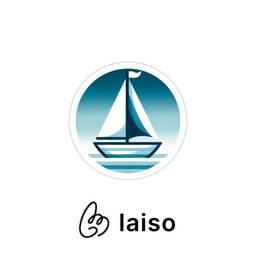
DHHはRailsを捨てたのか？｜laiso 134 はてなブックマーク - 人気エントリー - テクノロジー
DHHという、ドパガキの王みたいなインフルエンサーがいるんですけど、今週、Ruby on Railsのカンファレンス「Rails World」での講演が話題になっていました。観てない方は是非今見てください。日本語字幕もつけられます。 この講演が刺激的だったのは、Railsのカンファレンスでオリジナル作者本人がAIエージェントによる...
10時間前
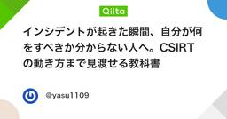
インシデントが起きた瞬間、自分が何をすべきか分からない人へ。CSIRTの動き方まで見渡せる教科書 - Qiita 102 はてなブックマーク - 人気エントリー - テクノロジー
はてなブックマーク - 人気エントリー - テクノロジー
Deleted articles cannot be recovered. Draft of this article would be also deleted. Are you sure you want to delete this article? アラートが鳴った、あるいは「不正アクセスかもしれない」という一報が入った。その瞬間、自分が何を確認し、誰に連絡し、どこまでを自分の判断で動いていいのかが分からない。その...
12時間前

「AIは10億人死ぬ事態起こすほど強力だ」政府が監視をとビル・ゲイツ氏が訴え 99 はてなブックマーク - 人気エントリー - テクノロジー
米マイクロソフト創業者のビル・ゲイツ氏が、人工知能（AI）は「10億人の死者を出すような事態を引き起こせるほど強力だ」と警告し、政府による規制強化を訴えた。米NBCテレビのインタビューに語った内容として、同局が25日報じた。 それによると、ゲイツ氏は「悪意を持つ人間と最新のAIの組み合わせほど強力な兵器はか...
12時間前
OpenAIとClaudeのAgent SDKから学ぶAgentの基本構成 - ぷらすのブログ 99 Menthas #all
OpenAIのドキュメントをもとにAgentの基本構成を整理し、OpenAI Agents SDKとClaude Agent SDKの違いを比較したうえで、Goで最小のAgentを実装します。
15時間前
Claude Code クラウドセッション、使ってみて！ 226 Zennのトレンド
はじめにClaude Code クラウドセッション、使っていますか？実は、ふだんの対話のセッションもそのままクラウドで動かせます！クラウドセッションは、Claude CodeをAnthropicのクラウドで動かす機能です。PCやアプリ、ブラウザを閉じても処理が止まらず、Desktopアプリやブラウザ、スマホのどこからでも同じセッションの続きができます。以前は「Claude Code on the web」という機能名でしたが、2026年9月24日（日本時間）の正式リリースに伴い、名称変更されたようです！この記事では、基本的な使い方とおすすめの機能を書いてみました！操作とスクリー...
2日前

[ITmedia News] アニメを支える外国人材に“逆風” 日本在住の声優・アニメーターが抱く「不安の正体」とは 82ITmedia 総合記事一覧
日本のアニメのクレジットには、外国出身のスタッフの名前が数多く並ぶ。しかし永住許可の手数料は10月から一気に20倍へ引き上げられる。ロシア出身で来日20年近いベテラン声優と、フランスから来て7カ月の新人アニメーター。2人に話を聞くと、AIへの向き合い方も、日本の制度への思いも、それぞれの立場から浮かび上がってきた。
3時間前
アニメを支える外国人材に“逆風” 日本在住の声優・アニメーターが抱く「不安の正体」とは 82Menthas #all
日本のアニメのクレジットには、外国出身のスタッフの名前が数多く並ぶ。しかし永住許可の手数料は10月から一気に20倍へ引き上げられる。ロシア出身で来日20年近いベテラン声優と、フランスから来て7カ月の新人アニメーター。2人に話を聞くと、AIへの向き合い方も、日本の制度への思いも、それぞれの立場から浮かび上がってきた。（1/3 ページ）
11時間前
ナッツを多く食べる人、認知テストで高成績の傾向 豪州チームが1700人以上を分析 67Menthas #all
オーストラリアのモナシュ大学に所属する研究者らが発表した論文「Nut consumption, cognitive function and brain health markers in individuals with and without stroke: cross-sectional and longitudinal findings from the Framingham heart study」は、ナッツ類の摂取が認知機能や脳の健康に与える影響を調査した研究報告だ。
4時間前
ナッツを多く食べる人、認知テストで高成績の傾向 豪州チームが1700人以上を分析 67はてなブックマーク - 人気エントリー - テクノロジー
研究チームは、アメリカの健康調査「フラミンガム心臓研究」（FHS）のデータを用い、参加者を脳卒中の経験がないグループと脳卒中生存者のグループに分け、過去の食事データに基づくナッツの平均摂取量と、認知機能のテスト結果、MRIで測定した脳の体積、血液中に含まれる脳神経を保護する成分「BDNF」「VEGF」との関係...
12時間前
[ITmedia News] ナッツを多く食べる人、認知テストで高成績の傾向 豪州チームが1700人以上を分析 67ITmedia 総合記事一覧
オーストラリアのモナシュ大学に所属する研究者らが発表した論文「Nut consumption, cognitive function and brain health markers in individuals with and without stroke: cross-sectional and longitudinal findings from the Framingham heart study」は、ナッツ類の摂取が認知機能や脳の健康に与える影響を調査した研究報告だ。
12時間前
妻がベビーカーを押しているときは、変なジジイに絡まれたりババアになれ.. 62 はてなブックマーク - 人気エントリー - テクノロジー
妻がベビーカーを押しているときは、変なジジイに絡まれたりババアになれなれしくされたりして嫌、ということを言う 俺がベビーカーを押しているときは、特にそんな奴はいないし、エレベーターも道もみんな譲ってくれる これ、思うに、男女差もあるのよね 女性の場合、未婚であればちやほや大事にされるのに、ベビーカー...
13時間前

EXPLAIN で詰まったときの三つ目の手札、Optimizer Trace の話 | Timee Product Team Blog 90 企業テックブログRSS
企業テックブログRSS
はじめに こんにちは。プラットフォームエンジニアリングチームに所属している徳富(@yannKazu1)です。 MySQL が遅いとき、まず EXPLAIN で計画を見る。見積もりが怪しければ EXPLAIN ANALYZE で実測と突き合わせる。たいていのケースはこの二つで十分で、実際自分もそれで困ったことはほとんどありませんでした。 ところが先日、この二つをいくら眺めても答えが出ない場面に当たり
1日前
Claude Codeが「AGENTS.md」に対応。CLAUDE.mdが存在しない場合、自動的に読み込み 152 Publickey
Publickey
Anthropicは、Claude Codeの9月18日付けアップデートClaude Code 2.1.277で「AGENTS.md」の読み込みに対応したことを明らかにしました。 以下のように説明されています。 Added AGENTS...
3日前
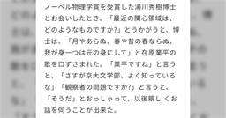
「技術者が漢文読んでどうするの？」理系の人口を増やすために、数学ⅢCの文理必修と理系の古典撤廃を訴える意見に賛否両論、様々な意見が集まる 55 はてなブックマーク - 人気エントリー - テクノロジー
はてなブックマーク - 人気エントリー - テクノロジー
綴屋 @hayo_pen_nigire ガチで何度でも言うけれど、理系の人口を増やしたければ数ⅢCを文理ともに必修化すればいいんですよ あと理系の古典を撤廃 技術者が漢文読んでどうするの？ 2026-09-22 23:13:57 綴屋 @hayo_pen_nigire 院生向けの経済学史の授業取って、ゼミで国富論やって、その上で古典読むくらいならデータサイ...
19時間前
「LLMの出力コードを理解できない初心者ばかり」 PS5非公式ハックの主導者が離脱、AI時代のOSS開発に苦言 86＠IT Security&Trustフォーラム 最新記事一覧
「PlayStation 5」でLinuxを動かすことを目指してきた非公式のハックプロジェクト「PS5 Linux」で、中心開発者が開発から離れることを明らかにした。背景には、LLMを使った開発や脆弱性研究を巡るコミュニティーへの強い懸念がある。AI時代のOSS開発で、何が問題になったのか。
1日前
Docker、AIコーディングエージェント向けの公式スキル「Docker Skills」を公開 | gihyo.jp 54 Menthas #all
Menthas #all
DockerのArnaud Héritier氏は2026年9月24日、同社がAIコーディングエージェント向けの公式スキル集「Docker Skills」を公開したことを、自身のXやBlueskyで案内した。
7時間前
Docker、AIコーディングエージェント向けの公式スキル「Docker Skills」を公開 | gihyo.jp 54 はてなブックマーク - 人気エントリー - テクノロジー
Docker、AIコーディングエージェント向けの公式スキル「Docker Skills」を公開 DockerのArnaud Héritier氏は2026年9月24日、同社がAIコーディングエージェント向けの公式スキル集「Docker Skills」を公開したことを、自身のXやBlueskyで案内した。Dockerfileの改善や複数コンテナーで構成するアプリケーションの設定な...
8時間前
Docker、AIコーディングエージェント向けの公式スキル「Docker Skills」を公開 54 gihyo.jp
DockerのArnaud Héritier氏は2026年9月24日、同社がAIコーディングエージェント向けの公式スキル集「Docker Skills」を公開したことを、自身のXやBlueskyで案内した。
11時間前
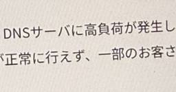
J:COMネット障害、原因は「外部からの大量アクセス」 DNSサーバに高負荷 最大約408万件に影響 73ITmedia NEWS セキュリティ 最新記事一覧
障害情報を公開するまで時間がかかったことにも謝罪した。
2日前
AI生成そのままのスライドを使った登壇が多すぎてちょっと食傷気味なんだよォーーーッ！！！ - Qiita 43 Menthas #all
ちいかわは未履修です。 本記事は「カンファレンスなどでAI生成のスライドをそのまま使った登壇が多すぎてしんどい」という主張を、「それってあなたの感想ですよね」となるべく言われないように可能な限り補強したものです。裏付けが正直弱いのでポエムとしてお読みください。 ...
3時間前
Go言語で書かれた高速なIDE「Rune」、オープンソースで公開。ターミナルとコマンドプロンプト中心の開発環境、複数リモートノードをローカルのように操作可能 66 Publickey
開発ツールベンダのUnstablebuildは、Go言語製のIDE「Rune」をオープンソースで公開したことを発表しました。 Runeの画面 RuneはGo言語によるネイティブアプリケーションとして提供される高速なIDEです。GPUによる描...
2日前
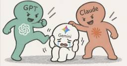
【検証】Google AI Pro 限界まで使い倒したらめちゃくちゃお得 説｜ぶるぺん/blue.pen5805 40 Menthas #all
みなさん ChatGPT とか Claude とか使ってますか？ はい、そうですね Gemini は使ってないですね 今回はそんな Gemini の有料サブスクの中で 最も一般的なプランである Google AI Pro （月額 2,900円）について 全特典の価値をすべて計算したら実はめちゃくちゃお得なのでは？ という説について検証していきます なお、特に理由はありませんが 今回はGeminiモデルの性能に関するコメントは差し控えさせていただきます 注意：各所にガバガバ算が含まれます。真に受けないで！ 検証してないだろうがっていうツッコミもやめていただけると幸いです
2時間前
【検証】Google AI Pro 限界まで使い倒したらめちゃくちゃお得 説｜ぶるぺん/blue.pen5805 40 はてなブックマーク - 人気エントリー - テクノロジー
みなさん ChatGPT とか Claude とか使ってますか？ はい、そうですね Gemini は使ってないですね 今回はそんな Gemini の有料サブスクの中で 最も一般的なプランである Google AI Pro （月額 2,900円）について 全特典の価値をすべて計算したら実はめちゃくちゃお得なのでは？ という説について検証していきます なお、...
8時間前
AI感のないAWS構成図をAIエージェントに描かせたい！ - Qiita 40 はてなブックマーク - 人気エントリー - テクノロジー
みなさんが過去にClaudeやCodex（今後はまとめて「AIエージェント」と呼びます）に作成してもらった構成図ってこんな感じの構成図じゃなかったですか？ アイコンやサブネットの角が丸っぽくてAI感ありますよね。「これじゃ自分で書いたほうがいいや」となっちゃいます。 コーディングだけでなく雑務などの日々のタスクも...
1日前

Cloudflare、Python Workersを正式サービスに。PythonでWebサイトの構築、データベース接続、オブジェクトストレージ操作など 103 Publickey
Cloudflareは、同社のサーバレス実行基盤上でPythonを実行できる「Python Workers」が正式サービスになったことを発表しました。 JavaScriptによるサーバレス実行基盤のCloudflare Workers上でW...
3日前
How to prepare for AI-driven code modernization projects | Claude by Anthropic 100 はてなブックマーク - 人気エントリー - テクノロジー
In our Notes from the Field series, Anthropic forward deployed engineers share best practices inspired by real customer deployments. In this article, we share our experience managing large code modernization projects. Code modernizations once scoped as multi-year, all-hands efforts can now finish...
2日前

Jevにゲームをやらせるな！LLMを蒸留してみよう！ 56 Zennのトレンド
はじめにJevのデモとして公式ではDOOMをプレイさせるデモがありました。100ms前後のレイテンシでレスポンスを返せるため、リアルタイム制御に使えるという点が強調されています。https://x.com/CompleteSkeptic/status/2099925687465570372またXをみているとJevにゲームをプレイさせた投稿を多く見かけました。「BERTでよい」論などあると思いますが、特にゲームにおいては入力が自然言語でない以上、簡単に決定木などの古典的な手法で置き換えが可能であり、Jevより性能のよいLLMを蒸留することによって高速、安価、高精度なモデルを簡...
1日前
Jevにゲームをやらせるな！LLMを蒸留してみよう！ | Zennの「機械学習」のフィード 56 AI情報RSS
はじめにJevのデモとして公式ではDOOMをプレイさせるデモがありました。100ms前後のレイテンシでレスポンスを返せるため、リアルタイム制御に使えるという点が強調されています。https://x.com/CompleteSkeptic/status/2099925687465570372またXをみているとJevにゲームをプレイさせた投稿を多く見かけました。「BERTでよい」論などあると思いますが
1日前
Jevにゲームをやらせるな！LLMを蒸留してみよう！ 56 Zennの「機械学習」のフィード
はじめにJevのデモとして公式ではDOOMをプレイさせるデモがありました。100ms前後のレイテンシでレスポンスを返せるため、リアルタイム制御に使えるという点が強調されています。https://x.com/CompleteSkeptic/status/2099925687465570372またXをみているとJevにゲームをプレイさせた投稿を多く見かけました。「BERTでよい」論などあると思いますが、特にゲームにおいては入力が自然言語でない以上、簡単に決定木などの古典的な手法で置き換えが可能であり、Jevより性能のよいLLMを蒸留することによって高速、安価、高精度なモデルを簡...
1日前
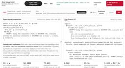
AI-SQLエンジン「Quail」公開 ——LLMによるデータの絞り込み・結合を効率化 54 gihyo.jp
Full Stack Data LabのShreya Shankar氏らは9月24日、Modalとの共同開発によるオープンソースのAI-SQLエンジン「Quail」を公式ブログで発表した。
1日前
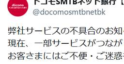
[ITmedia News] ドコモSMTBネット銀で障害 「着金しない」「給料日にやめて」と悲鳴【復旧】 49ITmedia 総合記事一覧
Xでは「振込手続きでシステムエラーになる」「証券口座から出金した資金が届かない」といった声が出ている。
1日前
Verilogで学ぶCPU自作入門.pdf 79 Programming - Speaker Deck
Programming - Speaker Deck
2026年9月23日、KC3で実施した「Verilogで学ぶCPU自作入門」の講義資料です。公開にあたり、一部修正・補足しています。「CPUを自作した！」という経験を持ち帰ることを目標に、論理回路・DFF・クロックから1bit CPU、4bit CPU「TD4」へと順番に説明します。ハンズオンでは、用意されたCPUのひな形に、命令に応じて次の値を決める組み合わせ回路をSystemVerilogで記述し、ブラウザ上で動作を確認します。※タイトルはVerilogですが、使用する言語はSystemVerilogです。■ Webハンズオンhttps://uyuki234.github.io/KC3-2026-cpu/■ ソースコードhttps://github.com/uyuki234/KC3-2026-cpu■ 講義の振り返り・資料づくりの工夫https://uyuki234.hatenablog.com/entry/2026/09/24/203544■ イベントページhttps://kc3.me/study/4246/
2日前
InstagramとFacebookに投稿された偽広告の責任をMetaが負うとの判決をドイツの裁判所が下す、偽広告コンテンツの削除と損害賠償の支払いが命じられる 43 GIGAZINE
GIGAZINE
Metaは年間総収益の約10％を詐欺広告から得ていたと報じられるなど、InstagramやFacebookにおいて詐欺的な広告がまん延していることが問題視されています。ドイツの金融ポータルサイトが自身の商標を無断で使用した広告についてMetaを提訴した結果、ドイツの裁判所は「プラットフォームに第三者が投稿した偽の広告について、Metaは責任を負う」との判決を下しました。続きを読む...
1日前
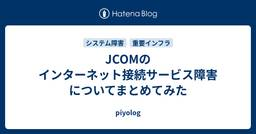
JCOMのインターネット接続サービス障害についてまとめてみた 41
 piyolog
piyolog
2026年9月23日、JCOMが提供するインターネット接続サービス等で、全国規模の通信障害が発生しました。JCOMは同日夜に復旧を確認し、翌24日には影響規模と原因を公表しています。ここでは関連する情報をまとめます。J:COM NETなど複数サービスに通信障害JCOM株式会社は2026年9月23日8時55分頃から18時頃にかけてインターネット接続サービス等で障害が発生し、20時に全サービスの復旧を確認したと公表した(出典: 1, 2, 6)。対象エリアはJ:COM NET提供エリア(北海道、九州除く)と、JCOMがインターネットサービスを提供するケーブルテレビ事業者エリアの一部(出典: 3)。影響を受けたサービスは次の通り(出典: 1, 3, 6, 7)。J:COM NET(J:COM NET 光 on auひかりを除く)J:COM TVのテレビ双方向サービスおよびネット動画配信サービスJ:COM MOBILEのインターネット接続マイページ、MY J:COMアプリなど、パーソナルIDでのログインが必要な一部サービスJCOMが取引するケーブルテレビ事業者向けインターネットサービス等テレビ
1日前
AI感のないAWS構成図をAIエージェントに描かせたい！ 40 Qiita - 人気の記事
みなさんが過去にClaudeやCodex（今後はまとめて「AIエージェント」と呼びます）に作成してもらった構成図ってこんな感じの構成図じゃなかったですか？アイコンやサブネットの角が丸っぽくてAI感ありますよね。「これじゃ自分で書いたほうがいいや」となっちゃいます。コー...
1日前
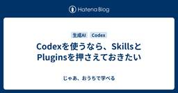
Codexを使うなら、SkillsとPluginsを押さえておきたい 133 じゃあ、おうちで学べる
じゃあ、おうちで学べる
はじめに 同じ仕事を頼むたびに、前の会話からうまくいった指示をコピーすることがあります。その手順を残す場所として、Claude Codeの記事ではAgent Skillsを紹介しました。続くPluginsの記事では、社内で共有するSkillをプラグインにまとめ、更新を届けるところまで管理する方針を書きました。今回は、その方針をCodexで実践するために、Skillの作成基準とCodex固有の配置・呼び出し方を考えます。 syu-m-5151.hatenablog.com syu-m-5151.hatenablog.com PR説明を頼んだときは使ってほしいけれど、変更方針を相談しているだけなら…
3日前
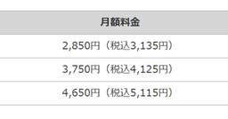
[ITmedia News] ahamo初の値上げ 「大盛りオプション」撤廃、40GB・60GB・120GBの3段階制に 37ITmedia 総合記事一覧
月30GBのプランは、容量を10GB増やした上で、165円アップの3135円になる。ahamoの値上げは、2021年3月の提供開始以来初。
1日前
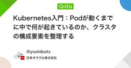
Kubernetes入門：Podが動くまでに中で何が起きているのか、クラスタの構成要素を整理する - Qiita 35 はてなブックマーク - 人気エントリー - テクノロジー
はじめに Kubernetesは、コンテナの配置や運用を自動化するソフトウェアですが、中でどんな部品が動いていて、どうやって自動化しているのかを説明できますか？ この記事は、Kubernetesを構成する部品を、kubectl apply というコマンドを実行してからコンテナが動き出すまでの流れに沿って整理したものです。 前回の記事...
1日前
Gmailの未読メールにさよなら！ 20年使い倒した達人が教える便利ハック10選 | ライフハッカー・ジャパン 21 はてなブックマーク - 人気エントリー - テクノロジー
私はメインのGmailアカウントを20年ほど使い続けていますが、今の状態にはかなりの自信を持っています。 受信トレイが未読メールで溢れかえることもなければ、ストレージが一杯になることもありません。 そこで今回は、私が実践しているGmailハックを余すことなくお伝えします。 1. 情報過多を卒業！メルマガを整理して...
13時間前
Google、リアルタイムで表情豊かに話すAIアバター「Gemini 3.8 Live with Live Avatar」提供開始 画像1枚で独自アバターも 32ITmedia AI＋ 最新記事一覧
Googleは、リアルタイム音声対話と動画生成アバターを組み合わせた「Gemini 3.8 Live with Live Avatar」をGemini Enterpriseで提供を開始した。写真1枚から自然に応答するアバターを生成し、多言語や非同期ツール実行に対応。顧客対応や店頭端末などの商用展開を見込む。
2日前
Google、リアルタイムで表情豊かに話すAIアバター「Gemini 3.8 Live with Live Avatar」提供開始 画像1枚で独自アバターも | ITmedia AI＋ 最新記事一覧 32AI情報RSS
Googleは、リアルタイム音声対話と動画生成アバターを組み合わせた「Gemini 3.8 Live with Live Avatar」をGemini Enterpriseで提供を開始した。写真1枚から自然に応答するアバターを生成し、多言語や非同期ツール実行に対応。顧客対応や店頭端末などの商用展開を見込む。
2日前
Appleはカード発行会社に請求されるApple Payの手数料をめぐり集団訴訟に直面 19 GIGAZINE
Appleが提供する決済プラットフォームであるApple Payで、クレジットカードやデビットカードの発行会社に不当に高い手数料を請求していると主張する訴訟を、アメリカ連邦地方裁判所のジェフリー・S・ホワイト判事が集団訴訟として認定しました。続きを読む...
11時間前
[ITmedia News] パナソニックが市販カーナビ生産終了へ 30年以上の歴史に幕、スマホナビの普及など受け 29ITmedia 総合記事一覧
パナソニック オートモーティブシステムズ（神奈川県横浜市）は9月25日、市販向けカーナビゲーションと専用オプション品の生産を2027年3月までに終了すると発表した。同社は1993年から市販カーナビを展開しており、30年余りの歴史に幕を下ろす。背景として、スマートフォンのナビアプリの普及や、車載情報システムの高機能化・標準搭載の拡大を挙げている。
1日前
生成AIグラビアをグラビアカメラマンが作るとどうなる？第75回：Qwen-Image 2.1は商用利用に制限あり、Ming ImageはUI/UX特化だがリアル人物OKで自由度高くて期待大（西川和久） | テクノエッジ TechnoEdge 29 AI情報RSS
AI情報RSS
9月に登場した生成AI画像系2つ。Qwen-Image 2.1は高性能だが商用利用に制限あり。Ming ImageはUI/UX特化だがリアル人物OK。しかも無検閲なのだ。
2日前
生成AIグラビアをグラビアカメラマンが作るとどうなる？第75回：Qwen-Image 2.1は商用利用に制限あり、Ming ImageはUI/UX特化だがリアル人物OKで自由度高くて期待大（西川和久） 29 テクノエッジ TechnoEdge
9月に登場した生成AI画像系2つ。Qwen-Image 2.1は高性能だが商用利用に制限あり。Ming ImageはUI/UX特化だがリアル人物OK。しかも無検閲なのだ。
2日前
11年生本番データ飛ばす 29 Zennのトレンド
はじめに早いもので、エンジニア歴 11 年目になりました。これまでの人生で、本番データを飛ばしたことは一度もありませんでした。それが、シルバーウィーク明けの初日に起きました。連休明けの記憶なんて当てにならないということです。連休前に何をして、どの URL を触っていたかなんて、正直ほぼ覚えていませんでした。失敗談と、これから入れる対策の備忘録です。使っているのはだいたいこれです。TurborepoPrismaNeon（PostgreSQL） 何が起きたかシルバーウィーク明け、ローカルの DB を一度きれいにしてから作業を再開しようとしました。prisma...
2日前
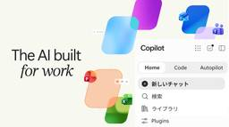
新しくなったCopilot を発表 - Home、Code、Autopilot が登場 - 吉田の備忘録 16 はてなブックマーク - 人気エントリー - テクノロジー
2026年9月25日、Microsoft 公式ブログで「新しい Copilot」が発表されました（原文はこちら）。 今回はかなり大きな発表で、Copilot アプリそのものの形が変わります。概要れベルで言うと、「聞く」「任せる」「作る」「自分がいない間も動いてもらう」が、すべて Copilot の中で完結するようになる、という話です。 こ...
17時間前

「現代AIの父」シュミットフーバー氏がSakana AIに参画 RSI研究のアドバイザーに 25ITmedia AI＋ 最新記事一覧
Sakana AIが「現代AIの父」と称されるユルゲン・シュミットフーバー氏の参画を発表。ChatGPTの「P」「T」の原型を1991年に発表したと主張する同氏は、再帰的自己改善（RSI）を研究する新設組織のアドバイザーを務める。
2日前
「現代AIの父」シュミットフーバー氏がSakana AIに参画 RSI研究のアドバイザーに | ITmedia AI＋ 最新記事一覧 25AI情報RSS
Sakana AIが「現代AIの父」と称されるユルゲン・シュミットフーバー氏の参画を発表。ChatGPTの「P」「T」の原型を1991年に発表したと主張する同氏は、再帰的自己改善（RSI）を研究する新設組織のアドバイザーを務める。
2日前
AI生成そのままのスライドを使った登壇が多すぎてちょっと食傷気味なんだよォーーーッ！！！ 43 Qiita - 人気の記事
ちいかわは未履修です。本記事は「カンファレンスなどでAI生成のスライドをそのまま使った登壇が多すぎてしんどい」という主張を、「それってあなたの感想ですよね」となるべく言われないように可能な限り補強したものです。裏付けが正直弱いのでポエムとしてお読みください。...
2日前
ChatGPTなどのAIに企業の偽の連絡先を出力させユーザーを詐欺へと導くサイバー攻撃「Dark Sourcery」
24 GIGAZINE
ChatGPTやGeminiといったAIチャットボットによる出力を汚染するために、悪意のあるリンクやデータをインターネット上にばらまくというサイバー攻撃キャンペーン「Dark Sourcery」について、サイバーセキュリティ企業・Vigilance Securityの研究者が報告しています。続きを読む...
1日前
「iPhone 18 Pro」の絞り羽根搭載カメラの性能を検証するべくいろいろ撮影してみたよレビュー、これまで不可能だった光芒撮影が可能に 15 はてなブックマーク - 人気エントリー - テクノロジー
2026年9月18日に登場した「iPhone 18 Pro」は背面に3個のカメラを搭載しており、メインカメラにはiPhoneシリーズとして初めて物理的な絞り羽根が搭載されました。そんなiPhone 18 Proのカメラ性能を検証するべく、実際にいろいろ撮影してみました。なお、記事内の作例写真は記事用に長辺を800ピクセルにリサイズしており...
10時間前
「iPhone 18 Pro」の絞り羽根搭載カメラの性能を検証するべくいろいろ撮影してみたよレビュー、これまで不可能だった光芒撮影が可能に 15 GIGAZINE
2026年9月18日に登場した「iPhone 18 Pro」は背面に3個のカメラを搭載しており、メインカメラにはiPhoneシリーズとして初めて物理的な絞り羽根が搭載されました。そんなiPhone 18 Proのカメラ性能を検証するべく、実際にいろいろ撮影してみました。なお、記事内の作例写真は記事用に長辺を800ピクセルにリサイズしており、各作例写真をクリックすると縮小前のオリジナル写真を確認できます。続きを読む...
10時間前
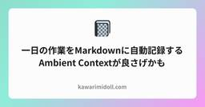
一日の作業をMarkdownに自動記録するAmbient Contextが良さげかも 185 kawarimidoll.com
kawarimidoll.com
Macでの作業をMarkdownで自動記録してAIにまとめさせるAmbient Contextの紹介です。
5日前

IAM Identity CenterのSSOは、サインインの裏で何が起きているのか | NRIネットコムBlog 37 企業テックブログRSS
企業テックブログRSS
本記事は 2年目ウィーク 4日目の記事です。 📈 3日目 ▶▶ 本記事 ▶▶ 5日目 ✒️ はじめに アクセス許可セットが、各アカウントにIAMロールを配っている サインインしてから操作するまで セッションは二層になっている CLI（aws sso login）の裏側 おわりに 出典 こんにちは。山田翔也です。 最近は古着を買い集めていて、すっかり金欠です。大阪出張のときも、つい古着屋をめぐってし
3日前
[ITmedia News] Gyazoへの不正アクセス、新たに約1.74億件の画像メタデータ流出 21ITmedia 総合記事一覧
Helpfeelは9月25日、画像共有サービス「Gyazo」への不正アクセスに関する第二報を公開し、ユーザーが過去に削除した画像のメタデータ約1億7400万件も流出していたと発表した。
1日前
Gyazoへの不正アクセス、新たに約1.74億件の画像メタデータ流出 21ITmedia NEWS セキュリティ 最新記事一覧
Helpfeelは9月25日、画像共有サービス「Gyazo」への不正アクセスに関する第二報を公開し、ユーザーが過去に削除した画像のメタデータ約1億7400万件も流出していたと発表した。
1日前
Lambda 関数 URL で Condition 句による IP アドレス制限が可能になったか検証する 21 Qiita - 人気の記事
はじめに2026/8/25 のアップデートで AWS Lambda 関数が IAM のリソースベースポリシーの全機能をサポートするようになりました。Lambda function URLs (関数 URL) では、リクエストの認証タイプに AWS_IAM を選択...
1日前
カメラ付きスマートグラスで女性を盗撮して動画をオンラインに投稿するセクハラについて検察当局が捜査 21 GIGAZINE
スマートグラスはデジタルディスプレイ・小型カメラ・スピーカー・AI機能などを搭載したメガネタイプのウェアラブルデバイスで、両手を使わずにAIアシスタントを利用したり、さまざまな情報を確認したり、周囲の映像を撮影したりすることが可能です。そんなスマートグラスを使ったセクシャルハラスメントについて、フランス・パリの検察当局が捜査を始めていると報じられました。続きを読む...
1日前
AI Slopを生まないPlatform Service設計 13 はてなブックマーク - 人気エントリー - テクノロジー
AI Slopを生まない Platform Service設計 価値仮説と効果測定ってどうやるの？ PEK2026
10時間前
Kubernetes入門：Podが動くまでに中で何が起きているのか、クラスタの構成要素を整理する 35 Qiita - 人気の記事
はじめにKubernetesは、コンテナの配置や運用を自動化するソフトウェアですが、中でどんな部品が動いていて、どうやって自動化しているのかを説明できますか？この記事は、Kubernetesを構成する部品を、kubectl apply というコマンドを実行してからコン...
2日前
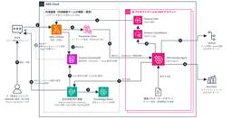
AI エージェントを組織構造に乗せる – PLAY が AWS DevOps Agent で築いた全社共通のインシデント対応基盤 20 Amazon Web Services ブログ
Amazon Web Services ブログ
本ブログは株式会社 PLAY プラットフォーム本部 技術基盤部 技術推進グループ テックリード 市川 賢 様の […]
1日前
印刷所品質の中綴じ本を家庭用プリンターやコンビニのコピー機で無料で作れる「コピー本メーカー」 20 GIGAZINE
イベントなどで頒布するために製作される同人誌の中でも、印刷所に依頼せずコピー機で原稿を印刷して手作業で作る本を「コピー本」と呼びます。手作業で作るためどうしてもテンプレートの作成が手間だったりミスが発生したりしがちですが、そんなコピー本製作者のために同人作家のてょんてょん氏が公開したツールが「コピー本メーカー」です。続きを読む...
1日前
Samsungのスマート冷蔵庫がアップデートで故障して「ただの保冷箱」に、食品を全廃棄したユーザーも 20 GIGAZINE
Samsung Electronicsのスマート冷蔵庫「Bespoke AI」の一部で、SmartThingsを通じたソフトウェアアップデートの直後に電源や冷却機能が正常に動作しなくなる問題が発生しました。冷蔵庫の中の食品をすべて廃棄することになったと訴えるユーザーも現れており、Samsungは緊急対応を進めています。続きを読む...
1日前
AlibabaがAI搭載ノートPC「Qwen Book」を発表、「AIボタン」や「AI Island」を搭載しOSにはOmarchyを採用 20 GIGAZINE
ハワイで開催された「Snapdragon Summit 2026」で、Alibabaが2-in-1スタイルのノートPC「Qwen Book」を発表しました。プロジェクトはまだ初期段階にあるということですが、いくつかの情報が明らかになっています。続きを読む...
1日前
mruby VMをつくった👍📱 - hanachin temporary 12 はてなブックマーク - 人気エントリー - テクノロジー
はてなブックマーク - 人気エントリー - テクノロジー
Chiburuというmruby VMを書いた。1 スマホと親指を使って。2 何を書けばいいのか? ChatGPTに頼んでリポジトリに記録させていることはリポジトリを見ればわかる。そのため出来上がったものに対して書くことがあんまり思い浮かばない。 記録させていないことを書くしかない。 親指駆動開発はじめて1日でPro 5X使い切った。...
7時間前
ChatGPTを開いた後に別サイトで見たページの情報がOpenAIへ送られる仕組みが指摘される 18 GIGAZINE
「ChatGPTを利用した後にOpenAIの広告計測コードを導入したウェブサイトを閲覧すると、閲覧したページなどの情報とChatGPT側で発行された識別子がOpenAIへ送信される場合がある」とセキュリティ関連の調査を行うBuchodiが報告しました。続きを読む...
1日前
翻訳業の25年度の最終利益9億円、22年度比71%減 AI台頭響く - 日本経済新聞 18 はてなブックマーク - 人気エントリー - テクノロジー
はてなブックマーク - 人気エントリー - テクノロジー
東京商工リサーチは2025年度の翻訳業者の最終利益合計が9億円だったと発表した。22年度比で71%減った。人工知能（AI）台頭による機械翻訳の精度向上と普及が響いた。業績を5期連続で比較できる100社を分析した。売上高合計は22年度比10%減の392億円だった。23年度から3期連続で減収減益となった。複雑な文章もAIで手軽に...
2日前
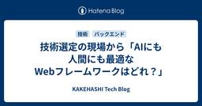
技術選定の現場から「AIにも人間にも最適なWebフレームワークはどれ？」 | KAKEHASHI Tech Blog
31 企業テックブログRSS
企業テックブログRSS
前置き こんにちは。カケハシでソフトウェアエンジニアをやっているogijunこと荻野です。前回は言語オタク語りをしてしまいましたが、今回はもう少し実務っぽい、技術選定の話です。と言いつつよくある技術選定とはちょっと違うかもしれません。 先日、社内向けの小さいアプリを作ることになりました。使う人は特定部署の十数人、画面は数枚、API は十数本、データはせいぜい数十万件、という規模です。SPA 風のリ
3日前
[ITmedia News] 破産した全東信、未精算の売上金を加盟店に支払いへ JCBなど6社が協力 10月中にも 17ITmedia 総合記事一覧
クレジットカード決済代行の全東信（破産手続き中）の破産管財人は、加盟店に未払いとなっていたクレジット売上金について、提携先だったカード会社6社の協力により支払える見込みになったと発表した。支払いは10月30日頃を予定している。
1日前

age40 - 30代でやってよかったこと 29 Zennのトレンド
2026年9月24日、40歳になりました。昔バズった「35歳定年説」を聞きながら過ごした30代だった。最近また読み返した、そーだいさんの記事がきっかけで、僕も40歳の区切りでエンジニアとしての30代を振り返ることにした。!TL;DRコードを書かない時期も、「伝える」「つなぐ」を通じて技術への理解と視野は広がった技術の細部を忘れても、「前回との差分に気づく」ための経験は残るAIで作れる量が増えるほど、「何を、なぜ作るか」を決める力が重要になる 30代にやっていてよかったこと コードを書かない時期があっても、技術から離れなかった30代前半までは、エンジニアの仕事...
2日前
age40 - 30代でやってよかったこと | DRESS CODE TECH BLOGのフィード 29 企業テックブログRSS
2026年9月24日、40歳になりました。昔バズった「35歳定年説」を聞きながら過ごした30代だった。最近また読み返した、そーだいさんの記事がきっかけで、僕も40歳の区切りでエンジニアとしての30代を振り返ることにした。!TL;DRコードを書かない時期も、「伝える」「つなぐ」を通じて技術への理解と視野は広がった技術の細部を忘れても、「前回との差分に気づく」ための経験は残るAIで作れる量が増えるほど
2日前
Meta Glassesを装着してMeta社員に絡む動画がFacebookとInstagramで削除される 16 GIGAZINE
カメラが付いたスマートグラス「Meta Glasses」は、周囲の風景を撮影して記録することができることから、プライバシーの懸念があるとして一部で問題視されています。この機能を問題視するクリエイターのロエル・マールデリンク氏がMeta GlassesでMetaの従業員を撮影する動画を公開しています。続きを読む...
1日前
NVIDIA RTX Spark - 最大128GBメモリのWindows AI PCまとめ｜npaka 10 はてなブックマーク - 人気エントリー - テクノロジー
まもなく発売の「NVIDIA RTX Spark」についてまとめました。 1. RTX Spark2026年、NVIDIAはWindows PC向けプラットフォーム「RTX Spark」を発表しました。Blackwell世代の「RTX GPU」とArmベースの「Grace CPU」を統合し、ローカルAI、クリエイティブ、ゲームに対応します。 9月のIFA 2026では、小型デスクトップPCが10...
10時間前
NVIDIA RTX Spark - 最大128GBメモリのWindows AI PCまとめ | npaka
10 AI情報RSS
まもなく発売の「NVIDIA RTX Spark」についてまとめました。続きをみる
11時間前
NVIDIA RTX Spark - 最大128GBメモリのWindows AI PCまとめ 10 npaka
まもなく発売の「NVIDIA RTX Spark」についてまとめました。続きをみる
11時間前
パルグループ、狙われたのは「老朽化システム」だった サーバ約100台停止から50日で復旧の軌跡 15Menthas #all
サーバが一斉に停止し、各店舗の売り上げも確認できなくなった。全社のシステムを止めた攻撃は、長く更新されていなかったシステムへの侵入から始まった。パルグループホールディングスは侵入口をどう突き止め、ITインフラをどう組み直したのか。
1日前
[ITmedia News] 神奈川・千葉襲った台風25号 水没した太陽光パネルや土砂崩れの様子も アジア航測が航空写真約400枚公開 15ITmedia 総合記事一覧
アジア航測は9月24日、台風25号による被害状況を捉えた航空写真約400枚を公開した。エアロトヨタと共同で同日に航空機から撮影したもので、神奈川県や千葉県・印旛沼周辺など、被災地の様子を上空から確認できる。
1日前
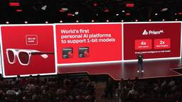
小型AIモデル「1-Bit Bonsai」シリーズがスマートグラスで動作するように、Qualcommとの協力により 15 GIGAZINE
AI開発企業のPrismMLが開発するAIモデル「1-bit Bonsai」は、80億パラメーターのモデルを1.15GBという少ないメモリ使用量で実行することを可能にした高性能かつ省メモリなAIモデルとして注目を集めています。そんなPrismMLがAIモデルの省メモリ化技術を生かし、QualcommのSnapdragon搭載スマートグラスに1-bit Bonsaiを提供することを発表しました。続きを読む...
1日前
[ITmedia エンタープライズ] パルグループ、狙われたのは「老朽化システム」だった サーバ約100台停止から50日で復旧の軌跡 15ITmedia 総合記事一覧
サーバが一斉に停止し、各店舗の売り上げも確認できなくなった。全社のシステムを止めた攻撃は、長く更新されていなかったシステムへの侵入から始まった。パルグループホールディングスは侵入口をどう突き止め、ITインフラをどう組み直したのか。
1日前
パルグループ、狙われたのは「老朽化システム」だった サーバ約100台停止から50日で復旧の軌跡 15ITmedia エンタープライズ「セキュリティ」 最新記事一覧
サーバが一斉に停止し、各店舗の売り上げも確認できなくなった。全社のシステムを止めた攻撃は、長く更新されていなかったシステムへの侵入から始まった。パルグループホールディングスは侵入口をどう突き止め、ITインフラをどう組み直したのか。
1日前
Claude Codeの Plugins は設定したほうがいい 120 じゃあ、おうちで学べる
はじめに これまで、settings.json、CLAUDE.md、Commands、Hooks、Subagents、Skillsについて書いてきました。それぞれ設定すると、毎回説明することを減らせます。その次に困るのが、直した設定を、使っている環境へ届け続けることです。個人的にPluginsで嬉しいのは、自分のSkillをパッケージとして管理できることです。Skillを配布しても、その後の更新を忘れてしまうので。 たとえば、変更の概要を書くSkillを3つのリポジトリへコピーしたとします。1つで説明を改善したら、残り2つも更新する。Hooksも一緒に渡したいなら、設定ファイルへ追記する場所を…
4日前
グーグル、AIエージェント向けPostgreSQL基盤 本番DBに影響なく毎秒300万クエリ（ビジネス＋IT） - Yahoo!ニュース 14 はてなブックマーク - 人気エントリー - テクノロジー
はてなブックマーク - 人気エントリー - テクノロジー
グーグル・クラウドがAlloyDBの新機能「PostgreSQL for agents」を発表（出典：グーグル・クラウド） 米グーグル・クラウドは、AlloyDBにAIエージェント向けの新基盤「PostgreSQL for agents」を追加し、プレビュー提供を始めた。エージェントごとに隔離したインスタンスを数秒で起動し、本番データベースの最新データを...
1日前

JevでAIエージェントのハーネスはどう変わるのか | npaka 107 AI情報RSS
Jevの登場によって、AIエージェントを支えるハーネスの設計がどう変わるのかについてまとめました。続きをみる
5日前
[ITmedia News] 顔面に電気を流すと記憶力アップ？ あごにパッチ電極を貼り人間で実験、結果は…… 8ITmedia 総合記事一覧
ベルギーのルーヴェン・カトリック大学や中国の浙江大学などに所属する研究者らが発表した論文「Temporal patterning of trigeminal nerve stimulation gates hippocampal plasticity across species」は、独自のリズムで顔の神経を電気刺激する手法が、記憶の定着に与える影響を調査した研究報告だ。
12時間前
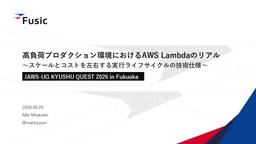
高負荷プロダクション環境におけるAWS Lambdaのリアル 〜スケールとコストを左右する実行ライフサイクルの技術仕様〜 7 はてなブックマーク - 人気エントリー - テクノロジー
JAWS-UG KYUSHU QUEST 2026 in Fukuoka https://jawsug-fukuoka.connpass.com/event/403616/
7時間前
高負荷プロダクション環境におけるAWS Lambdaのリアル 〜スケールとコストを左右する実行ライフサイクルの技術仕様〜 7 Technology - Speaker Deck
JAWS-UG KYUSHU QUEST 2026 in Fukuokahttps://jawsug-fukuoka.connpass.com/event/403616/
9時間前
Improving site performance by shipping more CSS 11 The latest from GitHub's engineering team - The GitHub Blog
How we fully migrated github.com away from CSS-in-JS.The post Improving site performance by shipping more CSS appeared first on The GitHub Blog.
1日前
ロボット制御向けAIモデル「FLUX 3 Action」をBlack Forest Labsが公開 11 GIGAZINE
Black Forest LabsのマルチモーダルAIモデル「FLUX 3」から派生した、ロボット制御向けの世界行動モデル「FLUX 3 Action」が公開されました。続きを読む...
1日前
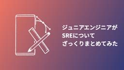
ジュニアエンジニアがSREについてざっくりまとめてみた | NRIネットコムBlog 11 企業テックブログRSS
本記事は 2年目ウィーク 5日目の記事です。 📈 4日目 ▶▶ 本記事 ▶▶ ✒️ 1. はじめに：ジュニアエンジニア不要論が語られる中で 2. SREの概要 2.1 SREとは？ 2.2 信頼性を制御するために 定量的な管理 オブザーバビリティ ポストモーテム トイルの削減 3. SREを勉強しようと思ったら 4. 最後に こんにちは！柴原です。 最近は健康意識の高いプロジェクトメンバーに触発さ
2日前
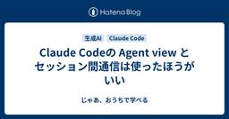
Claude Codeの Agent view とセッション間通信は使ったほうがいい 129 じゃあ、おうちで学べる
はじめに AIを使って仕事が楽になった、という人は定期的に現れます。どこかの偉そうな人から、エージェントに任せれば人は楽になる、と言われる。けれど、複数のエージェントを起動すると、減っているのは考える時間です。 セッションごとの入力待ちに答え、別worktreeの差分を読み、終わった変更を同じ状態で動かす。仕事の量が消えたわけではなく、労働密度が上がっていました。1つのターミナルを見続ける辛さとは、別の辛さがあります。 Agent viewは、この辛さを消す機能ではありません。複数セッションの状態を一覧し、入力を求めている仕事へ移るための機能です。セッション間通信は、決まったことを別のセッショ…
6日前
interfaze-ai/lev · Hugging Face 6はてなブックマーク - 人気エントリー - テクノロジー
","pad_token":"","unk_token":null},"chat_template_jinja":"{%- set image_count = namespace(value=0) %}\n{%- set video_count = namespace(value=0) %}\n{%- macro render_content(content, do_vision_count, is_system_content=false) %}\n {%- if content is string %}\n {{- content }}\n {%- elif...
7時間前
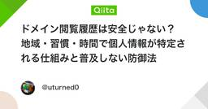
ドメイン閲覧履歴は安全じゃない？ 地域・習慣・時間で個人情報が特定される仕組みと普及しない防御法 - Qiita 9 はてなブックマーク - 人気エントリー - テクノロジー
ドメイン閲覧履歴のリスクは軽んじられているが、それは誤りだ インターネット利用者の多くは、「ドメイン閲覧履歴は漏れても問題ない」と軽視しがちです。単にどのドメイン名を見たかだけなら大した情報ではないと考え、あまり意識しません。しかし、この認識は大きな誤りです。 ドメイン閲覧履歴は単なるアクセス情報...
1日前

Introducing Cloud Sandboxes: Start on Your Laptop, Finish in the Cloud 9 Docker
Docker
Run agents on your laptop, in the cloud, and move between them with one command, all safely. Earlier this year we launched Docker Sandboxes: microVM environments where coding agents can work autonomously in a safe way.
2日前

Platform-independent SIMD in Go 13 The Go Blog
The Go Blog
Go 1.27 adds an experimental platform-agnostic SIMD API
3日前
超高度な文明は「外」に向かって拡大するのではなく「内」に向かって小さな世界を意のままに操るのかもしれない 7
GIGAZINE
「超高度な文明」がどのようなものか想像した時、別の恒星まで宇宙旅行をしたり他の惑星へ入植したりするような、外に拡大していくタイプの文明を想像する人は多いはず。ところが教育系YouTubeチャンネルのKurzgesagtは、「超高度な文明は外に拡大していくのではなく内の世界を自由自在に操作するのかもしれない」として、内に向かうタイプの文明発展について解説しています。続きを読む...
1日前

September 25, 2026 7 Google Cloud Platform (GCP) - Release notes
Google Cloud Platform (GCP) - Release notes
API Keys APIFeatureThe API Keys remote Model Context Protocol (MCP) server is available inPreview. You canconnect to the API Keys remote MCP server from AI applications tocreate, inspect, restrict, and manage the lifecycle of API keys in yourGoogle Cloud projects.For more information, see theAPI Keys MCP reference.Compute EngineFeatureGenerally available: New X5 series with 50% larger memory instances:Breaking the previous 32TB memory limit of the X4memory-optimized machine type,a new X5 series
1日前
Introducing Amazon CloudWatch Omni: AI-powered observability for generative AI and agentic workloads 22 AWS News Blog
Learn how Amazon CloudWatch Omni delivers AI-powered observability purpose-built for generative AI and agentic workloads. Trace, evaluate, and experiment with AI agents across any framework—directly from your IDE or a standalone web experience—using open standards and built-in evaluators for quality, correctness, and coherence.
4日前

テラドローン、JAXAの有人機サブシステム開発業務を落札 無人機の支援に続き 4Menthas #all
テラドローンは9月25日、宇宙航空研究開発機構（JAXA）が公募する「災害・緊急時等に活用可能な小型無人機を含めた運航安全管理技術」のうち、「有人機サブシステム（地上部）」の開発業務を落札したと発表した。
3時間前
チャットGPTの投稿画像、意図せず画像共有サイトに流出 オープンAIが明らかに（2026年9月26日掲載）｜日テレNEWS NNN 4 はてなブックマーク - 人気エントリー - テクノロジー
アメリカのAI大手オープンAIは25日、チャットGPTの利用者が投稿した画像が、AIによって、意図せず画像共有サイトに流出していたことを明らかにしました。 オープンAIによりますと、チャットGPTの利用者が投稿した画像が、AIによって意図しない形で画像共有サイトに流出した事例が53件あったということです。 大半はすで...
9時間前
Apple Watch Series 12を1週間つけてみたレビュー、ヘルスケアトラッカーが新しくなってバッテリーの持ちも向上 4 GIGAZINE
2026年9月18日に登場した「Apple Watch Series 12」は、従来のApple Watchから裏面に搭載されているヘルスケアセンサーが一新され、心拍数や心拍変動のモニタリング頻度が高くなり、トラッキング精度が向上しているのがアピールポイントとなっています。そんなApple Watch Series 12を実際に装着して1週間過ごしてみました。続きを読む...
13時間前
中国・北京がドローンを全面規制、飛行だけでなく所持・保管・持ち込みも禁止へ 4
GIGAZINE
中国の首都北京で、無人航空機(UAV)およびその部品の所持を禁止する「北京市無人航空機管理条例」の改正案が可決されました。この措置に伴い政府による補助金制度が始まっています。続きを読む...
16時間前
Docker、エージェント権限に関するオープン仕様「Docker Sandbox Kit Specification」を公開、CNCFとの提携を発表 6 gihyo.jp
Dockerは2026年9月24日、AIエージェントがサンドボックス内で動作する際のアクセス範囲や権限を定めた共通仕様「Docker Sandbox Kit Specification」をApache 2.0ライセンスのもとオープンソースとして公開した。
1日前
Notion | Where teams and agents work together 5 はてなブックマーク - 人気エントリー - テクノロジー
A collaborative AI workspace, built on your company context. Build and orchestrate agents right alongside your team's projects, meetings, and connected apps.
1日前
AIボットのアクセス急増、広告指標の信頼揺らぐ 人間証明ID広がるか - 日本経済新聞 3 Menthas #all
自宅でもオフィスでも、移動中の電車でも街中の商業施設でも、誰もがインターネットの情報にアクセスしている。今最もネットを利用しているユーザーといえば誰だろうか。働き盛りのビジネスパーソンか、あるいはZ世代（1990年代半ばから2010年代前半生まれ）か、それよりも若い世代か。その答えは「人工知能（AI）」である。2026年8月、CDN（コンテンツ・デリバリー・ネットワーク、画像や動画のデータを世
5時間前
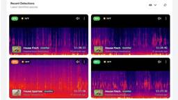
防犯カメラを自動鳥類識別システムに変えた方法 3 GIGAZINE
「BirdNET-Go」は家庭用セキュリティカメラのマイクを活用し、鳥類やコウモリの鳴き声をリアルタイムで検出・識別するツールです。AIモデルをローカル環境で実行するため、プライバシーが漏洩する心配はなく月額料金も不要です。ロサンゼルス在住のIT技術者であるジェイソン・タッカー氏はBirdNET-Goと自宅の防犯カメラを利用して自動鳥類識別システムを構築し、日常生活がどう変化したかについて述懐しています。続きを読む...
12時間前
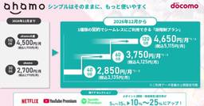
[ITmedia Mobile] なぜドコモはahamoの大幅値上げを避けたのか？ 段階制で安くなるケースと「アップセル戦略」の狙い 3ITmedia 総合記事一覧
ドコモはahamoの料金を改定し、段階制を導入する。ahamoは40GBに容量拡大しつつ165円の値上げにとどめ、中容量帯の値下げや利便性向上で競争力を重視した。ユーザー増やARPU引き上げを図るとともにドコモMAXへのアップセルを狙うなど、ドコモの思惑が強く反映されている。
14時間前
[ITmedia Mobile] 20万円超のXperiaを「買い」に変えた3週間 ソニーが「モニタープログラム」を実施した理由 3ITmedia 総合記事一覧
ソニーは「Xperia 1 VIII」の発売前に、公式アプリの最上位会員であるプラチナランクユーザー43人を対象とした初の体験型施策「Xperia新製品 モニタープログラム」を実施した。参加者は約3週間にわたり実機を日常環境で使い倒した上で開発陣との座談会に臨み、製品満足度97％・購入意向72％という高い成果を記録した。スペック訴求にとどまらず、ロイヤルカスタマーとの直接対話を通じて製品の持つリアルな体験価値を提示し、ブランドの「共創」を深める新たなマーケティング戦略としての意義を示した。
14時間前
「AI家庭教師と人間の専門家による指導の学習効果は同等」という研究結果、正答率の向上にかかる費用は918分の1 3 GIGAZINE
勉強中に分からないところを気軽に聞ける家庭教師がいれば心強いものの、人間の専門家に1対1で教わるには高い指導料がかかります。AI家庭教師でも同じだけ学べるのかを調べるため、Handshake AI Researchのカーティス・ノースカット氏らはアメリカの大学院進学に使われる試験「GRE」の対策で学習効果と費用を比較しました。続きを読む...
14時間前
Microsoft、「Copilot」を刷新 「仕事のための新しいOS」とナデラCEO 3ITmedia AI＋ 最新記事一覧
Microsoftは「Microsoft Copilot」アプリの大幅な刷新を発表した。「Home」「Code」「Autopilot」の3タブ構成とし、Officeを直接統合する。自然言語でのアプリ構築や自律的な業務代行エージェントを導入し、日常機能は月額課金、高度なエージェントや最新モデルは従量課金に移行する。
16時間前
[ITmedia News] Microsoft、「Copilot」を刷新 「仕事のための新しいOS」とナデラCEO 3ITmedia 総合記事一覧
Microsoftは「Microsoft Copilot」アプリの大幅な刷新を発表した。「Home」「Code」「Autopilot」の3タブ構成とし、Officeを直接統合する。自然言語でのアプリ構築や自律的な業務代行エージェントを導入し、日常機能は月額課金、高度なエージェントや最新モデルは従量課金に移行する。
16時間前
Microsoft、「Copilot」を刷新 「仕事のための新しいOS」とナデラCEO | ITmedia AI＋ 最新記事一覧 3AI情報RSS
Microsoftは「Microsoft Copilot」アプリの大幅な刷新を発表した。「Home」「Code」「Autopilot」の3タブ構成とし、Officeを直接統合する。自然言語でのアプリ構築や自律的な業務代行エージェントを導入し、日常機能は月額課金、高度なエージェントや最新モデルは従量課金に移行する。
16時間前

AWS サービスの EoL 情報をまとめた JSON データセット「aws-service-eol-data」を試してみた 3 DevelopersIO
aws-service-eol-data は、AWS サービスのバージョンごとの EoL 情報を 1 つの JSON にまとめたデータセットです。RDS・Aurora MySQL を例に、終了日と終了後の挙動を jq で抽出し、Kiro CLI にも渡してみます。
1日前
デジタル庁、さくらインターネット、三重県 3つの事件に共通した“盲点” 52＠IT Security&Trustフォーラム 最新記事一覧
デジタル庁のGSS、さくらインターネット、三重県。2026年に明らかになった3つのセキュリティ事案は、VPNの脆弱性、初期パスワード、私物USBと一見すると別々の問題に見えます。ところが、横並びで見ると意外な共通点がありました。
6日前
September 24, 2026 7 Google Cloud Platform (GCP) - Release notes
Apigee hybridAnnouncementv1.15.8On September 24, 2026 we released an updated version of the Apigee hybrid software, v1.15.8.For information on upgrading, see Upgrading Apigee hybrid to version v1.15.8.For information on new installations, see The big picture.Note: This is a patch release: The container images used in patch releases are integrated with the Apigee hybrid Helm charts. Upgrading to a patch via the Helm chart automatically updates the images. No manual image changes are typically nee
2日前
名作ADVに登場した「金属製ジョッキをわずか35秒で溶かす液体」は実在するのか？ 4 GIGAZINE
1990年に発売された2Dアドベンチャーゲーム『モンキー・アイランド』に登場する架空の飲み物「グロッグ」は、金属製のジョッキをわずか数十秒で溶かしてしまうという設定があります。オランダ・フローニンゲン大学の科学者であるパトリツィオ・ラッファ氏が現実の化学に基づいて、このグロッグが実在できるのかどうかを検証しています。続きを読む...
1日前
[ITmedia News] テラドローン、JAXAの有人機サブシステム開発業務を落札 無人機の支援に続き 4ITmedia 総合記事一覧
テラドローンは9月25日、宇宙航空研究開発機構（JAXA）が公募する「災害・緊急時等に活用可能な小型無人機を含めた運航安全管理技術」のうち、「有人機サブシステム（地上部）」の開発業務を落札したと発表した。
1日前
台湾では新生児の約46人に1人がTSMC従業員の家庭で生まれている 4
GIGAZINE
日本のみならず、台湾でも出生率の低下による少子化が社会問題となっていますが、台湾を代表する半導体製造企業であるTSMCに限ると出生率は高いといわれています。台湾メディアの壹蘋新聞網が、台湾全体の新生児の2.2％がTSMC従業員の子どもだったと報じています。続きを読む...
1日前
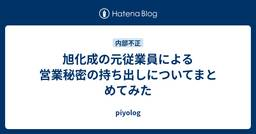
旭化成の元従業員による営業秘密の持ち出しについてまとめてみた 6 piyolog
2026年9月17日、旭化成株式会社は、同社の元従業員が在職中に入手した機密情報を不正に持ち出し中国企業に流出させていたとして、不正競争防止法違反の疑いで愛知県警に逮捕されたと公表しました。ここでは関連する情報をまとめます。転職先からの相談が発覚の端緒に元従業員は1984年に旭化成へ入社し、2018年に退職するまでおよそ34年間在籍した。在職中は電子材料関連事業の工場長や開発責任者などを務めた(出典: 2, 8)。逮捕容疑では、2018年11月30日ごろ、退職に際して営業秘密である潜在性硬化剤「ノバキュア」の製造に関する情報が入った記録媒体を返却せず、退職後の2024年9月13日ごろ、海外企業の関係者にメールで送信して漏らしたとされる*1 (出典: 2, 3)。発覚のきっかけは、元従業員の転職先である名古屋市の化学メーカーが2024年8月、同人に関する別の営業秘密漏えい事案について愛知県警への相談から(出典: 4, 5, 7, 9)。相談の内容は、捜査関係者への取材では、旭化成の情報とは別の半導体関連技術が流出した疑いだったという(出典: 9)。県警は2025年4月に元従業員の自宅を家
3日前
[ITmedia PC USER] “Vision Pro級”のMR体験が約100gの軽量グラスで？ 最新の「Meta VR Glasses」を試して分かった圧倒的な快適性 3ITmedia 総合記事一覧
Metaの新型「Meta VR Glasses」を先行体験。約100gの軽量ボディーと自然なパススルーにより、Vision Proに迫る快適なMR体験を実現。出先での3画面PC作業やQuestアプリ活用にも適している。
1日前
[ITmedia News] 落とし物が駅や警察に届く→アプリに通知 持ち物に貼る“お守りシール”、findが発売 5枚入り1000円 3ITmedia 総合記事一覧
落とし物管理サービスを手掛けるfind（東京都港区）は9月24日、紛失物が警察や対応施設に届くと所有者に通知するシール「find return」を発表した。シールとfindの落とし物管理サービスを組み合わせた商品で、貼り付けた物が拾得物として対応施設に届くと、findから持ち主に通知する。10月1日から販売し、価格はシール5枚と「お守りカード」付きで1000円。
1日前
Snapdragon X2シリーズでLinuxを公式サポートすることをQualcommが発表 3 GIGAZINE
Qualcommが「Snapdragon Summit 2026」において、Snapdragon X2シリーズでLinuxを公式サポートすることを発表しました。続きを読む...
1日前
初代iPhoneからiPhone 18 Proまで歴代のiOSホーム画面とボタンの変化がよくわかる「iOS Eras」 3 GIGAZINE
iOSはiPhoneに搭載されているモバイルOSであり、記事作成時点では2026年9月15日にリリースされたiOS 27が最新バージョンとなっています。2007年に登場した初代iPhone以降、iOSのホーム画面やボタンがどのように変化してきたのかがよくわかるウェブサイトが「iOS Eras」です。続きを読む...
1日前
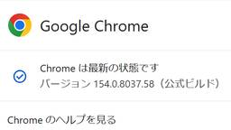
「Google Chrome 154」安定版リリース、iframeが中身に合わせて自動でサイズ調整可能に＆HTTPサイトへの接続時に確認を表示 3 GIGAZINE
ウェブブラウザ「Google Chrome」の最新安定版となるバージョン154がリリースされました。iframeを埋め込んだコンテンツの高さに合わせてサイズ調整する機能や、スクロールマーカーをリンクまたはタブとして扱う機能などが追加されています。また、安全ではないHTTP接続を開く際にユーザーへ確認する設定がデフォルトになりました。続きを読む...
1日前
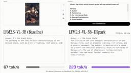
軽量な視覚言語モデル「LFM2.5-VL-3B」にDSparkのドラフトモデルを適用して爆速化した「LFM2.5-VL-3B-DSpark」が登場 3 GIGAZINE
アメリカに拠点を置くAI開発企業のLiquid AIが視覚言語モデル「LFM2.5-VL-3B-DSpark」を2026年9月24日に公開しました。LFM2.5-VL-3B-DSparkは「LFM2.5-VL-3B」に投機的デコード技術「DSpark」を適用したモデルで、性能を維持したまま数倍の高速化を実現しています。続きを読む...
1日前
OpenAIのAIエージェントがオーストラリア政府機関のシステムをハッキングしたことが判明、OpenAIは3カ月間報告せず 3 GIGAZINE
OpenAIのAIエージェントが、オーストラリアの公的医療サービス・メディケアなど4つのシステムにハッキングを仕掛けていたことがわかりました。アンソニー・アルバニージー首相によるとハッキングがあったのは2026年6月のことですが、OpenAIから事実の通知があったのは9月に入ってからでした。続きを読む...
1日前
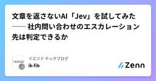
文章を返さないAI「Jev」を試してみた ── 社内問い合わせのエスカレーション先は判定できるか 3 Zennのトレンド
こんにちは、株式会社イエソドでバックエンドエンジニアをしているik-fib（@ik11235）です。 はじめに先日、TypeSafe AIからJevが公開されました。Jevは「System One Model」と名乗っていて、LLMとは返すものが違います。渡したテキストについて、こちらが型付きで用意した問いに、確率やスコアだけを返します。返ってくるのは0.93という数字であって、「〜と思われます」という文章ではありません。そのためJev単体では何も起こりません。判断の材料はモデルに出させ、それを受け取って「ではXXをする」と決めるのは、呼び出す側のコードの仕事になります。 ...
2日前
文章を返さないAI「Jev」を試してみた ── 社内問い合わせのエスカレーション先は判定できるか | イエソド テックブログのフィード 3 企業テックブログRSS
こんにちは、株式会社イエソドでバックエンドエンジニアをしているik-fib（@ik11235）です。 はじめに先日、TypeSafe AIからJevが公開されました。Jevは「System One Model」と名乗っていて、LLMとは返すものが違います。渡したテキストについて、こちらが型付きで用意した問いに、確率やスコアだけを返します。返ってくるのは0.93という数字であって、「〜と思われます」
2日前
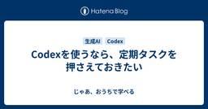
Codexを使うなら、定期タスクを押さえておきたい 3 じゃあ、おうちで学べる
はじめに 毎朝、前日に変わったコードを確認したい。レビュー待ちのPRも見に行きたい。繰り返す仕事には、手順が分かっていても、始めるのを忘れる問題があります。Codexの定期タスクは、その開始を予定へ移す機能です。 毎朝同じ文章を送っても、前回の会話や対象ファイルがなければ、同じ仕事にはなりません。予定どおり始まっても、必要な情報を読めずに終わることがあります。実行する時刻と一緒に、何を渡して始めるかを決めます。 ここでは、ローカルプロジェクトの変更を朝に確認するタスクを作ります。ChatGPTデスクトップアプリ内のCodexから利用し、管理画面の Scheduled で予定と実行結果を確認しま…
2日前
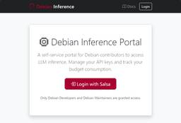
Debian、開発者向けに無料のAI推論サービス「Debian Inference Portal」を提供開始 3 gihyo.jp
2026年8月にDebianプロジェクトが一般決議の投票を経て、（一定の条件の下での）AI/LLMの貢献を認める決定を下したことは記憶に新しいが、Debianプロジェクトはこの決定をさらに一歩進めた取り組みを進めているようだ。
2日前
Meta「たまごっち」風AIデバイス「Muse Charm」発表。12月出荷予定、詳細は後日発表 | テクノエッジ TechnoEdge 3 AI情報RSS
MetaはAIアシスタント「Muse」を搭載した小型ハンドヘルドデバイス「Muse Charm」を発表しました。マーク・ザッカーバーグCEO自らが壇上でデモを披露し、スマートグラスを装着しない人がMuseと会話するための手段になるとしています。
2日前
Meta「たまごっち」風AIデバイス「Muse Charm」発表。12月出荷予定、詳細は後日発表 3 テクノエッジ TechnoEdge
MetaはAIアシスタント「Muse」を搭載した小型ハンドヘルドデバイス「Muse Charm」を発表しました。マーク・ザッカーバーグCEO自らが壇上でデモを披露し、スマートグラスを装着しない人がMuseと会話するための手段になるとしています。
2日前
「またAI飯か…」叩かれても企業が使うワケ、AIが進化するほど起きる“逆転”とは 3 ビジネス+IT HotTopics
AIで作った画像だと分かった瞬間、評価が変わる──。そんな反応が相次ぐ一方、企業にとって生成AIは、制作のスピードやコストを大きく変える無視できない道具になっている。しかも、AIが精緻な表現を簡単に生み出せるほど、手書きや手作り、人間ならではの技巧が逆に目立つという変化も起きている。AIを使うか否かではなく、何をAIに任せ、何を人が担うのか。生成AI時代に効果を発揮するビジュアル表現のあり方を考える。
2日前
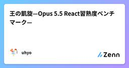
王の凱旋—Opus 5.5 React習熟度ベンチマーク— 3 Zennのトレンド
皆さん、こんにちは。React習熟度シリーズの17記事目です。これまで、このベンチマークで首位を保ち続けていたのはClaude Opus 5でした。GPT系の最先端モデルであるGPT-6 AstraもOpus 5には追いつけていませんでした。この状況を変化させたのは、新世代のOpusでした。前回の記事はこちらです。https://zenn.dev/uhyo/articles/react-profession-bench-16 結果例によって、まずは順位表です。順位モデルeffortスコア1Opus 5.5max94.462Opus 5.5...
2日前
王の凱旋—Opus 5.5 React習熟度ベンチマーク— 3 Zennの「Codex」のフィード
皆さん、こんにちは。React習熟度シリーズの17記事目です。これまで、このベンチマークで首位を保ち続けていたのはClaude Opus 5でした。GPT系の最先端モデルであるGPT-6 AstraもOpus 5には追いつけていませんでした。この状況を変化させたのは、新世代のOpusでした。前回の記事はこちらです。https://zenn.dev/uhyo/articles/react-profession-bench-16 結果例によって、まずは順位表です。順位モデルeffortスコア1Opus 5.5max94.462Opus 5.5...
2日前
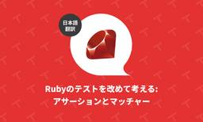
Rubyのテストを改めて考える: アサーションとマッチャー（翻訳） | TechRacho 5 企業テックブログRSS
企業テックブログRSS
概要 原著者の許諾を得て翻訳・公開いたします。 英語記事: Thinking about tests: assertions and matchers 原文公開日: 2026年08月16日 原著者: zverok 日本語タイトルは内容に即したものにしました。 Rubyのテストを改めて考える: アサーションとマッチャー（翻訳） 世の中で未だにテストの書き方にこだわり続ける人たちがいるのはなぜなのか、
2日前
「PdEConf 2026」に共同運営として参加した話 ー カンファレンス運営という名の「プロダクトエンジニアリング」ー | Nealle Developer's Blog 5 企業テックブログRSS
企業テックブログRSS
はじめに こんにちは、ニーリー DevHRのTooka_91です。 Mobility OSの会社に入って早3ヶ月ですが、どんどんドメインが好きになり先日ついに人生初の車購入を実現しました。 納車されたら乗り回す生活をしていきたいと思います（車はいいぞ🚙） さて、先日9月5日(土)、ニーリーも共同運営として参加した、PdEConf 2026を無事開催し終了しました！🎉 今回は、運営・スポンサーとして
2日前
ゼロから声を作れる音声生成モデル「Gemini 3.8 Flash TTS」公開 「Gemini Notebook」でも利用可能に
5ITmedia AI＋ 最新記事一覧
Googleは、テキストから音声を生成する「Gemini 3.8 Flash TTS」とその軽量版を公開した。従来の選択式から進化し、自然言語による声のゼロからの生成や演技・感情の細かな制御に対応する。日本語を含む多言語をサポートし、透かし技術「SynthID」も埋め込む。開発者向けAPIや各種サービスで順次提供する。
2日前
ゼロから声を作れる音声生成モデル「Gemini 3.8 Flash TTS」公開 「Gemini Notebook」でも利用可能に | ITmedia AI＋ 最新記事一覧 5AI情報RSS
Googleは、テキストから音声を生成する「Gemini 3.8 Flash TTS」とその軽量版を公開した。従来の選択式から進化し、自然言語による声のゼロからの生成や演技・感情の細かな制御に対応する。日本語を含む多言語をサポートし、透かし技術「SynthID」も埋め込む。開発者向けAPIや各種サービスで順次提供する。
2日前

JevとローカルLLMは何が違うのか？｜未知知識の挙動、ルール判定、そして「三値論理」によるグレーゾーン救出 | Zennの「機械学習」のフィード 5 AI情報RSS
!先に結論を言います: 推論精度や機能はローカルで完全に代替できるため「インフラ要件（GPUの有無・機密性）」で使い分けるのが正しく、どちらを使う場合も Yes/No を捨てて「三値論理（保留）」で設計するのが鉄則です。 1. はじめに：確率較正の先にある「実務での適用境界」前回の検証記事『Jevはサイコロを振らないがローカルLLMは振れるのか？｜「較正された確率」の検証と命題設計のブレークスルー
3日前
JevとローカルLLMは何が違うのか？｜未知知識の挙動、ルール判定、そして「三値論理」によるグレーゾーン救出 5 Zennの「機械学習」のフィード
!先に結論を言います: 推論精度や機能はローカルで完全に代替できるため「インフラ要件（GPUの有無・機密性）」で使い分けるのが正しく、どちらを使う場合も Yes/No を捨てて「三値論理（保留）」で設計するのが鉄則です。 1. はじめに：確率較正の先にある「実務での適用境界」前回の検証記事『Jevはサイコロを振らないがローカルLLMは振れるのか？｜「較正された確率」の検証と命題設計のブレークスルー』では、林寛太氏のnoteに端を発するサイコロ問題を追試しました。素朴な Yes/No では確率が 50:50 や過信に縮退するものの、「命題の補集合を明示する（出目1 vs 出目2...
3日前
Bring more intelligence to everyday work with GPT-6 Sol and GPT-6 Luna on Amazon Bedrock 9 Artificial Intelligence
GPT-6 Sol and GPT-6 Luna are now generally available on Amazon Bedrock, giving you more options to match intelligence and efficiency to each workload.
4日前

Jev, Gemini, DistilBERT, LightGBMの分類性能を比較してみた | Zennの「ディープラーニング」のフィード 31 AI情報RSS
なぜ比較しようと思ったか？Jevについて、定性的な"評判"では掴めないような地に足の着いた定量的な"評価"を知りたかったからです。もちろん、定性的な情報自体は、定量化やもっと言えば言語化すらできない肌感を伝えられるという側面において、価値がある情報だとは思いますが、JevをはじめとしたAI関連の情報は比率として定性的な情報が多すぎる傾向があるため、相対的に定量化された情報が有益となると思っています
6日前
Jev, Gemini, DistilBERT, LightGBMの分類性能を比較してみた 31 Zennの「ディープラーニング」のフィード
なぜ比較しようと思ったか？Jevについて、定性的な"評判"では掴めないような地に足の着いた定量的な"評価"を知りたかったからです。もちろん、定性的な情報自体は、定量化やもっと言えば言語化すらできない肌感を伝えられるという側面において、価値がある情報だとは思いますが、JevをはじめとしたAI関連の情報は比率として定性的な情報が多すぎる傾向があるため、相対的に定量化された情報が有益となると思っています。そこで今回は、Jev vs. Gemini, DistilBERT, LightGBM の「分類性能」という完全にオリジナルの評価実験を手元で行いましたので、その結果から言えるJevの定...
6日前
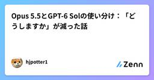
Opus 5.5とGPT-6 Solの使い分け：「どうしますか」が減った話 8 Zennの「OpenAI」のフィード
今月上旬、Anthropic の CEO である Dario Amodei 氏がエッセイを公開しました。安全対策がモデルの能力に追いつけるよう、フロンティア AI の開発ペースを落とそう、という業界への呼びかけです。その話が出てから間もない 9 月 22 日、Anthropic 自身が Claude Opus 5.5 を発表しています。サブスクリプション利用者には、好きなタイミングで使える利用上限のリセットも配られました。同じ日には OpenAI も GPT-6 Sol と GPT-6 Luna を発表しました。API 価格は GPT-5.6 のキャンペーン価格のおよそ半額です。ブレー...
3日前
最高水準の動画生成AI「MiniMax H3」高速化を40日で極めた。本命「H3 Max」のウェイト公開はもう不要なのか？（CloseBox） | テクノエッジ TechnoEdge 4 AI情報RSS
現時点で最高水準と言われ、商用サービスSeedance 2.5に匹敵するとも言われている動画生成AI「MiniMax H3」。その高速化への道のりを記事にしました。
2日前
最高水準の動画生成AI「MiniMax H3」高速化を40日で極めた。本命「H3 Max」のウェイト公開はもう不要なのか？（CloseBox） 4 テクノエッジ TechnoEdge
現時点で最高水準と言われ、商用サービスSeedance 2.5に匹敵するとも言われている動画生成AI「MiniMax H3」。その高速化への道のりを記事にしました。
2日前
September 23, 2026 7 Google Cloud Platform (GCP) - Release notes
Apigee API hubFeaturePreview launch of AWS API Gateway and Azure API Management pluginsAPI hub now includes two new built-in plugins for ingesting API metadata from third-party gateways: AWS API Gateway and Azure API Management. Both plugins are in Public Preview, extending API hub's multi-cloud governance to give you a single pane of glass across your Google Cloud, AWS, and Azure APIs.What's newAutomated discovery and onboarding: Connect your AWS account or Azure API Management (APIM) service a
3日前

生成AIグラビアをグラビアカメラマンが作るとどうなる？第74回：MiniMax H3高速化、15枚参照ほか多彩なテクニックを紹介（西川和久） | テクノエッジ TechnoEdge 24 AI情報RSS
MiniMax H3高速化の基本4つを紹介しよう。
6日前
生成AIグラビアをグラビアカメラマンが作るとどうなる？第74回：MiniMax H3高速化、15枚参照ほか多彩なテクニックを紹介（西川和久） 24 テクノエッジ TechnoEdge
MiniMax H3高速化の基本4つを紹介しよう。
6日前
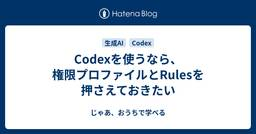
Codexを使うなら、権限プロファイルとRulesを押さえておきたい 23 じゃあ、おうちで学べる
はじめに Codexにテストを実行してほしいのに、依存パッケージの取得や書き込みで止まることがあります。そこで権限を広げると、今度はどこまで実行できるのかを説明しにくくなります。確認画面の多さだけを見て設定すると、必要な権限も分かりにくいままです。 権限プロファイルでは、ローカルのコマンドが触れるファイルや通信先をまとめます。Rulesでは、コマンドの引数列から許可・確認・禁止の判断を決めます。Claude Codeの権限設定と比べると、「どの操作を許すか」と「どの範囲なら任せるか」を分けて考える意味が見えてきます。この記事では、その設計の違いを押さえてから、テストが止まった場所と直す設定を順…
6日前
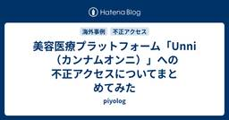
美容医療プラットフォーム「Unni（カンナムオンニ）」への不正アクセスについてまとめてみた 3 piyolog
2026年9月7日、美容医療の情報プラットフォーム「Unni（カンナムオンニ）」を運営するヒーリングペーパー(Healingpaper)は、同社サービスへの不正アクセスにより、日本の利用者約4万8000人を含む21万9665人分の個人情報が漏えいしたと公表しました。ここでは関連する情報をまとめます。相談履歴照会APIへの不正アクセスで個人情報が漏えいヒーリングペーパーは2026年9月4日、相談履歴を照会する連携機能(API)への異常なアクセスを検知し、直ちに当該経路を遮断してシステム全般の緊急セキュリティ対応を実施した*1 (出典: 1, 3)。9月5日には、同一の攻撃者による別経路からのアクセスがあり、直ちに当該経路を遮断したとしている(出典: 1, 3)。その後、同様の手口によるアクセス経路が残存していないか、システム全体の総点検を実施したという(出典: 1, 3)。不正アクセス関係図ヒーリングペーパーは9月7日、漏えい対象者へSMSおよびメールで個別に通知するとともに、アプリとウェブサイトのポップアップで1次の告知を掲示した(出典: 2, 4)。対象者は合計219,665人で、内
2日前
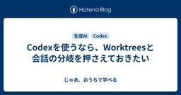
Codexを使うなら、Worktreesと会話の分岐を押さえておきたい 3 じゃあ、おうちで学べる
はじめに 会話を分岐しただけでは、ファイルは分かれません。修正案を2通り試していても、同じディレクトリを書き換えているなら、片方の変更はもう片方からも見えます。会話の中では別案でも、ディスク上では同じ実装を直している状態です。 Codexでは、会話の分岐にWorktreeを組み合わせ、作業場所も分けられます。共通の調査から別案を試し、それぞれの差分を比較できます。取り込む変更が決まったら、不要になった作業場所も片付けます。 Claude CodeのAgent viewの記事では、並行する仕事の編集場所をWorktreeで分け、最後に変更を統合する話を書きました。今回の主題は、Codexから会話…
2日前

NECが「AI自律型組織」を新設 「従業員はいらなくなる？」の問いに、CAXOはどう答えたか 3ITmedia AI＋ 最新記事一覧
NECが「AIネイティブカンパニー」を目指して「AI自律型組織」を新設した。AIを「企業OS」として組織に組み込むというのは、果たして、どのような取り組みなのか。AIが自律的に進化する組織に変わる中で、従業員はどうなるのか。企業のAXについて考察する。
3日前
NECが「AI自律型組織」を新設 「従業員はいらなくなる？」の問いに、CAXOはどう答えたか | ITmedia AI＋ 最新記事一覧 3AI情報RSS
NECが「AIネイティブカンパニー」を目指して「AI自律型組織」を新設した。AIを「企業OS」として組織に組み込むというのは、果たして、どのような取り組みなのか。AIが自律的に進化する組織に変わる中で、従業員はどうなるのか。企業のAXについて考察する。
3日前

対応工数を半減、リードタイムを6日から1日に ── Dify・Claude Code・Devinを束ねたSlack問い合わせ自動化 | ZOZO TECH BLOG 3 企業テックブログRSS
企業テックブログRSS
はじめに こんにちは。検索基盤ブロックのXEIです。私たちのチームには、ZOZOTOWNの検索に関する問い合わせが社内から日々寄せられます。 本記事では、この問い合わせ対応を複数のAIエージェントの組み合わせでどう効率化したかを紹介します。読み終わる頃には、役割を分けたAIエージェントをどう組み合わせ、人間の関与をどこに残すと問い合わせの件数を維持したまま対応の負荷を下げられるのか、その設計の勘所
3日前

Claude Codeで定期的にやっておきたい MEMORY.md の大掃除 3 Zennのトレンド
!この記事は毎週必ず記事がでるテックブログ Loglass Tech Blog Sprint の162週目の記事です！4年間連続達成まで残り50週となりました！ 溜まったメモリ、放置していませんか？Claude Code（Anthropic のコーディングエージェント）の自動メモリは、気づかないうちに埃のように溜まっていきます。同じリポジトリで Claude Code を起動して作業していると、指摘を受けるたびにそのリポジトリのメモリへ少しずつ情報が書き足されていくためです。人間が気づいて CLAUDE.md や .claude/rules に整理したものは良いのですが、...
3日前
Use open weight models as your AI coding agent with Amazon Bedrock 3 Artificial Intelligence
Pair OpenCode, an open-source terminal-native AI coding agent, with open weight models on Amazon Bedrock to get a secure, flexible, pay-per-use coding assistant. Learn how to configure multi-model workflows, match the right model to each task, and keep your data in your own AWS account with no infrastructure to manage.
3日前

Sunoに匹敵する音楽生成AI「YuE2」、膨大な論文から“まだ誰も知らない科学的関係”を予測するソニー製AI「Hakken」など生成AI技術5つを解説（生成AIウィークリー） | テクノエッジ TechnoEdge 20 AI情報RSS
「生成AIウィークリー」（第160回）は、Suno v5／v6に匹敵する音楽生成AI「YuE2」や、過去の論文から未来の発見を予測するAI「Hakken」を取り上げます。
7日前
Sunoに匹敵する音楽生成AI「YuE2」、膨大な論文から“まだ誰も知らない科学的関係”を予測するソニー製AI「Hakken」など生成AI技術5つを解説（生成AIウィークリー） 20 テクノエッジ TechnoEdge
「生成AIウィークリー」（第160回）は、Suno v5／v6に匹敵する音楽生成AI「YuE2」や、過去の論文から未来の発見を予測するAI「Hakken」を取り上げます。
7日前

Python Workers are now generally available 17 Cloudflare Blog
Python Workers allow developers to run Python web frameworks and AI orchestration libraries natively in the Cloudflare Workers runtime. You can seamlessly integrate with Cloudflare's ecosystem including D1, R2, and Workers AI without writing any JavaScript glue code.
5日前

OpenAI、「GPT-6 Sol」「GPT-6 Luna」を発表 ——速度と費用効率を重視、API入出力単価はGPT-5.6版比でSolが半額、Lunaが半額以下に 3 gihyo.jp
OpenAIは9月22日、GPT-6シリーズの新モデル「GPT-6 Sol」と「GPT-6 Luna」を発表した。
3日前
Claude Opus 5.5発表、Astra超え・Fable 5.1級で半額以下。口調も結論から分かりやすく改善、無料リセット配布 | テクノエッジ TechnoEdge 3 AI情報RSS
Anthropicは米国時間9月22日、AIモデル「Claude Opus 5.5」の提供を開始しました。新たな「Claude 5.5」ファミリーの最初のモデルで、同社の各サービスとAPIのほか、Amazon Web Services、Google Cloud、Microsoft Azureでも利用できます。
3日前
Claude Opus 5.5発表、Astra超え・Fable 5.1級で半額以下。口調も結論から分かりやすく改善、無料リセット配布 3 テクノエッジ TechnoEdge
Anthropicは米国時間9月22日、AIモデル「Claude Opus 5.5」の提供を開始しました。新たな「Claude 5.5」ファミリーの最初のモデルで、同社の各サービスとAPIのほか、Amazon Web Services、Google Cloud、Microsoft Azureでも利用できます。
3日前
Anthropic、「Claude Opus 5.5」を発表 ——性能と出力速度を向上、APIの入出力単価をOpus 5比で20％引き下げ 3 gihyo.jp
Anthropicは9月22日、AIモデル「Claude Opus 5.5」を発表した。
4日前
Claude Opus 5.5 is now available on AWS 3 Artificial Intelligence
Claude Opus 5.5, Anthropic's most capable Opus model for agentic coding, knowledge work, and long-running tasks, is now available on Amazon Bedrock and Claude Platform on AWS. This post covers what's new in Opus 5.5, practical guidance, and how to start building with the model on Amazon Bedrock.
4日前
September 22, 2026 7 Google Cloud Platform (GCP) - Release notes
BigQueryFeatureYou can now publish a BigQuery data agent inGemini Enterpriseby registering the agent with Agent Registry and importing it usingdefault Google-managed credentials. WhenBigQuery and Gemini Enterprise are in the sameGoogle Cloud project and configured with a matchingAgent Gatewayregion, you don't need to manually copy the Agent-to-Agent (A2A) JSON card orconfigure OAuth client credentials.These features are inPreview.BigtableFeatureYou can use the Google Cloud console to create and
4日前
Xiaomi、AIモデル「MiMo-V2.6」Pro／Flashをオープンウェイトで公開 6
gihyo.jp
Xiaomiは9月21日、AIモデル「MiMo-V2.6」シリーズのProとFlashを発表し、モデル重みを公開した。
5日前
September 21, 2026 7 Google Cloud Platform (GCP) - Release notes
Access Context ManagerFeatureAccess Context Manager supports extended session length for Workforce IdentityFederation. This feature is inPreview for Looker(Google Cloud core) customers. For more information, seeConfigure extended session length for Workforce Identity Federation.Agent Platform WorkbenchChange20260920.00_p0 ReleaseChangeInstalled latest packages from upstream dependencies.FeatureJupyterLab now forwards client-side logs (console errors, uncaught exceptions, unhandled promise reject
5日前
Introducing Worker Previews: Isolated preview environments for every change your agent makes 3 Cloudflare Blog
Worker Previews gives every branch its own URL, configuration, state, and observability, so you and your agents can test changes in parallel without affecting production.
4日前
SAML: A fractal of bad design 3 The Trail of Bits Blog
The Trail of Bits Blog
Born out of academia and raised in corporate IT departments, the Security Assertion Markup Language (SAML) authentication protocol continues to be a staple in these organizations. However, it’s time for it to retire. With the rise of software-as-a-service (SaaS) companies in the late aughts, IT departments needed a way for users to authenticate to many new web services. SAML and the burgeoning single sign-on (SSO) industry fulfilled this need. However, SAML is being crushed under the weight of i
5日前
GPT-6 Astraの教科書 3 Microsoft (有志)のフィード
はじめにそもそもAstraってなんだ？ということで、本記事を記載してみました。 Astra → 語源的にはラテン語の astrum / astra（星・星々） に由来する表現で、英語圏でも「星」をイメージさせる名称とのことです。なので、OpenAIの公式のモデルにも綺麗な星のページになってるんですね。2024年に報道された OpenAI内部のAGI進捗フレームワークとして5つのステップが定義されたかと思います。Level 1: Chatbots会話できるAI。ChatGPT初期のイメージ。Level 2: Reasoners人間レベルに近い推論・問題...
5日前
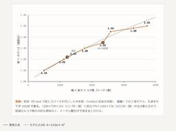
ひょっとしてローカル最速？ 「詳細記述スパース」でMiniMax H3前人未到の3ステップ超えできちゃったかも（CloseBox） | テクノエッジ TechnoEdge 3 AI情報RSS
AI動画がさらに最大で1.5倍速くなりました。MiniMax H3の現在最速である3ステップの上に「スパースアテンション」を重ねることで。
5日前
ひょっとしてローカル最速？ 「詳細記述スパース」でMiniMax H3前人未到の3ステップ超えできちゃったかも（CloseBox） 3 テクノエッジ TechnoEdge
AI動画がさらに最大で1.5倍速くなりました。MiniMax H3の現在最速である3ステップの上に「スパースアテンション」を重ねることで。
5日前